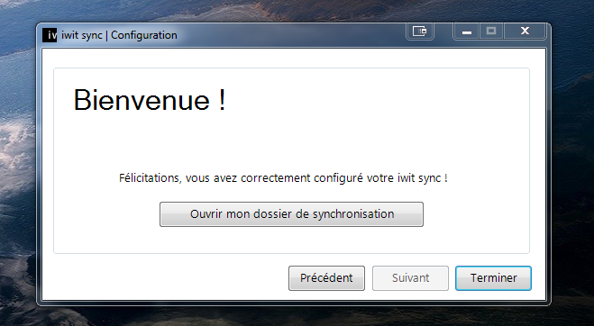
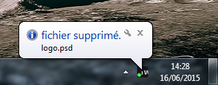
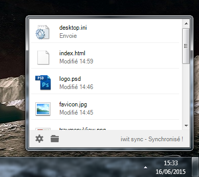

Ce guide vous guidera par étape afin de paramétrer correctement votre application.
Pour configurer votre logiciel à son premier lancement vous trouverez un icône sur votre bureau nommé iwit sync.
Une fois celle-ci ouverte vous trouverez les formulaires de premier lancement du logiciel afin de le configurer. Pour ceux-ci vous devrez renseigner l'adresse de votre serveur ainsi que l'identifiant et le mot de passe préalablement fournit par le service Iwit Systems.
Une fois ces trois champs renseignés, cliquez sur suivant.
Si tout c'est correctement deroulé vous devriez trouver la page suivante

Vous pouvez maintenant cliquer sur "Ouvrir mon dossier de synchronisation" et une fois celui-ci ouvert confirmer la fin de l'installation en cliquant sur "Terminer"
Un nouvel icône se présentera alors sur votre bureau, celui du raccourci permettant d'accèder à votre dossier de synchronisation présent dans vos documents "Dossier iwit sync". Il ne s'agit que d'un raccourci, vous pouvez le supprimer si vous le souhaitez il sera possible de le recréer plus tard.
Nous voilà maintenant avec le logiciel en fonctionnement. Vous pouvez retrouvez l'accès aux réglages de votre application à l'aide de son icône sur la barre des taches. Faites un clique droit sur l'icône d'iwit sync et vous trouverez le menu déroulant suivant.
Option nous permettra d'accèder aux réglages de l'application.
Synchroniser nous permettra de forcer l'application à synchroniser le dossier immédiatement.
A propos vous rend sur la page d'information du logiciel.
Aide vous permet d'ouvrir cette page.
Quitter vous permet simplement de quitter le logiciel jusqu'au prochain démarrage de windows.
En cliquant sur option vous verrez apparaitre la fenêtre de configuration, afin de pouvoir selectionner vos paramètres favoris.
Le panneau de configuration affiche alors 4 catégories.
La catégorie notification permettant de régler celon la préférence de l'utilisateur si une notification doit apparaître en bas de l'écran à chaque modification ayant lieu sur le dossier de synchronisation.
Exemple: suppression d'un fichier

La catégorie fréquence de synchronisation permet à l'utilisateur de choisir la fréquence à laquelle le logiciel "surveille" le dossier de synchronisation, c'est à dire que toutes les x secondes le logiciel ira voir si de nouveau dossiers ou fichiers on été ajoutés/modifiés afin de les mettres à jour dans le dossier de synchronisation. Ce paramètre est réglé par défaut à 10 secondes, n'ayant aucun impact sur les ressources de l'ordinateur il ne s'agit que d'un simple confort d'utilisation.
La catégorie limite de vitesse permet à l'utilisateur de choisir la vitesse maximum d'emission et de récéption des documents présent dans le dossier de synchronisation. Dans le cas d'un usage prioritaire du réseau internet vous pouvez alors définir une limite à cette récéption et emission afin de disposer des ressources nécessaire à un moment précis. Les paramètres sont initialisés par défaut à 0, c'est à dire vitesse illimitée.
La catégorie compte quand à elle permet à l'utilisateur de pouvoir modifier les paramètres de connexion dans le cas d'une migration du serveur ou un changement de mot de passe. Pour cela il suffit de cliquer sur modifier les détails du compte l'application restera alors ouverte mais laissera à disposition de l'utilisateur une fenêtre lui permettant de ressaisir ses identifiants de connexion.
Comme dis précedemment, si l'utilisateur décide de faire disparaître le raccourci sur son bureau lui permettant d'accèder au dossier de synchronisation il lui est possible de créer à nouveau un raccourci sur le bureau en cliquant simplement sur créer un raccourci sur le bureau.
Le dossier de synchronisation se trouve simplement dans vos documents au nom de iwitSync
Ce dossier ne peut-être renommé ou changé de location au risque de générer des erreurs.
A l'aide de iwit sync il est possible pour l'utilisateur de connaitre l'avancement de ces téléchargement ou émission par le biais d'une fenêtre contextuelle.
Pour que l'utilisateur affiche cette fenêtre il lui suffit de faire un clique gauche sur l'îcone d'iwit sync présent dans la barre des tâches

S'affiche alors leur de la dernière synchronisation du fichier et son état, si il à été envoyé, modifié ou bien supprimé. Il est également possible de connaître la vitesse de transfert lorsqu'un transfert est en cours. L'uilisateur à la possibilité de cliquer sur un des fichiers dans la liste afin de l'ouvrir directement sur son ordinateur.
Il se peut que lors d'une utilisation normale de votre application vous rencontriez des problèmes connues.
Ce problème concerne un echec de la synchronisation répété, lorsque le programme n'arrive pas à accomplir la synchronisation d'un fichier pour cause de problème sur les serveurs ou autre, il placera simplement le fichier qu'il a essayé de télécharger dans la poubelle et le retéléchargera par la suite. Cela évite toute sorte de fichier corrumpu et garantie une fiabilité des transferts. Le seul inconvenient est alors la présence de fichier de taille très faible dans votre corbeille. Vous ne prennez aucuns risques en les supprimants.
Téléphone : 09 81 23 53 56
Téléphone : 09 81 23 90 79